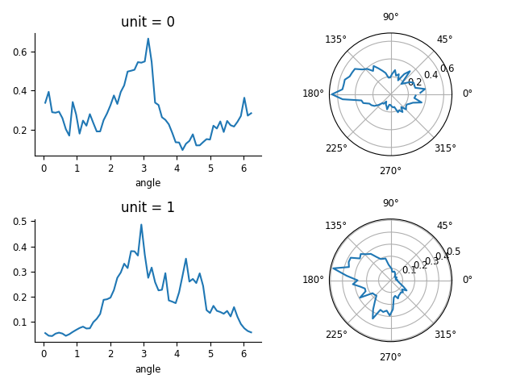
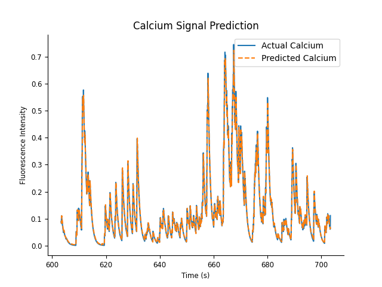

Download
This notebook can be downloaded as 03_calcium_imaging_analysis-users.ipynb. See the button at the top right to download as markdown or pdf.
Calcium imaging analysis of head-direction cells#
This notebook has had all its explanatory text removed and has not been run. It is intended to be downloaded and run locally (or on the provided binder), working through the questions with your small group.
Part 1 : Analyzing calcium imaging with pynapple#
For this part of the group project, we will use pynapple to do the following tasks:
Loading a NWB file
Compute tuning curves
Visualize tuning curves
Decode head-direction from neural activity
Let’s start by importing the necessary libraries and fetching the data.
import workshop_utils
import pynapple as nap
import matplotlib.pyplot as plt
import numpy as np
import nemos as nmo
import jax
# LBFGS works better with float64 precision
jax.config.update("jax_enable_x64", True)
# some helper plotting functions
from nemos import _documentation_utils as doc_plots
# configure pynapple to ignore conversion warning
nap.nap_config.suppress_conversion_warnings = True
# configure plot style
plt.style.use(nmo.styles.plot_style)
# fetch data
path = workshop_utils.fetch_data("A0670-221213.nwb")
print(path)
Load data#
Similar to part 1, we will start by loading the NWB file. The function nap.load_file can be used again.
data = ... # Load NWB file
print(data)
data = nap.load_file(path)
print(data)
There are multiple entries in the NWB file. The calcium transients are stored in the RoiResponseSeries entry.
The head-direction of the animal is stored in the ry entry. Let’s extract them.
transients = data["RoiResponseSeries"]
angle = data["ry"]
print(transients)
To get an idea of the data, let’s visualize the calcium transients of the first two neurons for the first 100 seconds of the recording.
Instead of creating a new IntervalSet object, we can use the method transients.get(0, 100) to get a restricted version of the Tsd object.
Contrary to restrict, which takes an IntervalSet object as input, get can take start and end times directly as input and does not
update the time support of the output Tsd object.
fig = plt.figure()
plt.plot(transients[:,0:2].get(0, 100))
plt.xlabel("Time (s)")
plt.ylabel("Fluorescence (a.u.)")
Figure check

Compute tuning curves#
Now we have
calcium transients
a behavioral feature (i.e. head-direction), We can compute tuning curves, i.e. the fluorescence of neurons as a function of head-direction. We want to know how the fluorescence of each neuron changes as a function of the head-direction of the animal. We can use the same function as before :
nap.compute_tuning_curves. Don’t forget to give a name to the feature when calling the function (i.e.feature_names = ["angle"]).
tuning_curves = nap.compute_tuning_curves(
data=, # The neural activity as a TsGroup
features=, # Which feature? Here the head-direction of the animal
bins=, # How many bins of feature space? Here 61 angular bins is a good numbers
range=, # The min and max of the bin array
feature_names = # Let's give a name to our feature for better labelling of the output.
)
tuning_curves
Visualize tuning curves#
fig = plt.figure()
plt.subplot(221)
tuning_curves[0].plot()
plt.subplot(222,projection='polar')
plt.plot(tuning_curves.angle, tuning_curves[0].values)
plt.subplot(223)
tuning_curves[1].plot()
plt.subplot(224,projection='polar')
plt.plot(tuning_curves.angle, tuning_curves[1].values)
plt.tight_layout()
Figure check

Decode head-direction from neural activity#
Now that we have the tuning curves, we can use them to decode the head-direction of the animal from the neural activity.
Pynapple provides two functions to do this: nap.decode_bayes for spike counts and nap.decode_template for event rates or continuous data.
Since the data are calcium transients and not spike counts, we will use the template matching method.
Question: Can you decode the head-direction of the animal using the function nap.decode_template and call the variable decoded_angle?
We will us the epoch epochs = nap.IntervalSet([50, 150]) to restrict the decoding to the first 100 seconds of the recording.
epochs = nap.IntervalSet(start=50, end=150)
decoded_angle, dist = nap.decode_template(
tuning_curves=..., # The tuning curves as an xarray object
data=..., # The neural activity as a TsdFrame in this case
bin_size=..., # The bin size for decoding. Here I suggest 0.1 second
metric=... # The metric to use to compare the neural activity to the tuning curves. Here I suggest "correlation"
epochs=transients.time_support # The epochs should correspond to when the neural activity is defined. Here we use the time support directly
)
Let’s visualize the decoded head-direction of the animal for the first 100 seconds of the recording.
fig, (ax1, ax2) = plt.subplots(figsize=(8, 8), nrows=2, ncols=1, sharex=True)
ax1.plot(angle.restrict(epochs), label="True")
ax1.scatter(decoded_angle.times(), decoded_angle.values, label="Decoded", c="orange")
ax1.legend(frameon=False, bbox_to_anchor=(1.0, 1.0))
ax1.set_ylabel("Angle [rad]")
im = ax2.imshow(
dist.values.T,
aspect="auto",
origin="lower",
cmap="inferno_r",
extent=(epochs.start[0], epochs.end[0], 0.0, 2*np.pi)
)
ax2.set_ylabel("Angle [rad]")
cbar_ax2 = fig.add_axes([0.95, ax2.get_position().y0, 0.015, ax2.get_position().height])
fig.colorbar(im, cax=cbar_ax2, label="Distance")
Figure check

The first panel shows the true head-direction of the animal and the decoded head-direction from neural activity. The second panel shows the distance between the neural activity and the tuning curves as a function of time and angle.
You can play with the metric parameters of the decoding function to see how it affects the decoding performance. Possible metrics are “euclidean”, “manhattan”, “correlation”, “jensenshannon” and “cosine”.
Part 2 : Modelling calcium imaging data with GLM#
Preprocessing the data#
To speed up the analysis, the following code computes a Rayleigh test to select only neurons that are significantly tuned to head-direction.
C = np.sum(tuning_curves.values * np.cos(tuning_curves.angle.values), axis=1) / np.sum(tuning_curves.values, axis=1)
S = np.sum(tuning_curves.values * np.sin(tuning_curves.angle.values), axis=1) / np.sum(tuning_curves.values, axis=1)
R = np.sqrt(C**2 + S**2)
Z = tuning_curves.shape[1] * R**2
p_value = np.exp(-Z)
tokeep_neurons = np.where(p_value < 0.01)[0]
transients = transients[:, tokeep_neurons]
tuning_curves = tuning_curves[tokeep_neurons]
print(f"Number of neurons after tuning selection: {transients.shape[1]}")
Finally, we sort the neurons based on their preferred head-direction.
pref_ang = tuning_curves.idxmax(dim="angle")
sort_idx = np.argsort(pref_ang.values)
transients = transients[:, sort_idx]
tuning_curves = tuning_curves[sort_idx]
pref_ang = pref_ang[sort_idx]
transients.set_info(pref_ang=pref_ang)
print(transients)
Basis functions for calcium data#
Here we can use the same RaisedCosineLogConv basis, but with a larger window size to capture the slower dynamics of calcium signals.
# define the basis for calcium data
calcium_window_size_sec = 0.5 # Window size in seconds
calcium_window_size = int(calcium_window_size_sec * transients.rate) # Convert window size to number of bins
calcium_basis = nmo.basis.RaisedCosineLogConv(
n_basis_funcs=..., # Number of basis functions
window_size=calcium_window_size # Window size in bins
)
calcium_basis
Preparing the features#
We can convolve the calcium transients with the basis functions to get the feature matrix.
# convolve all the neurons
calcium_convolved = calcium_basis.compute_features( ) # Parameter is the calcium transients
print(f"Convolved calcium shape: {calcium_convolved.shape}")
Fitting the Population GLM#
We can fit a PopulationGLM to the calcium data using a Gamma observation model, which is more appropriate for continuous-valued data.
Similar to before, we will create a train-test split using the first and second half of the data.
duration = calcium_convolved.time_support.tot_length("s")
start = calcium_convolved.time_support["start"]
end = calcium_convolved.time_support["end"]
training_ep = nap.IntervalSet(start, start + duration / 2)
testing_ep = nap.IntervalSet(start + duration / 2, end)
calcium_model = nmo.glm.PopulationGLM(
observation_model=..., # Observation model type
regularizer=..., # Regularizer type
solver_name=..., # Solver name
regularizer_strength=... # Regularization strength
).fit( , ) # Parameters are the convolved feature matrix and the calcium transients during training epoch
print(f"Calcium model coefficients shape: {calcium_model.coef_.shape}")
Predicting and visualizing the results#
We can predict the calcium signals using the fitted model during the test epoch and visualize the results.
calcium_predicted = calcium_model.predict( ) # Parameter is the convolved feature matrix restricted during testing epoch
We can visualize the predicted calcium signals alongside the actual signals to assess the model’s performance.
ep_to_plot = nap.IntervalSet(testing_ep.start[0], testing_ep.start[0] + 100) # Plot first 10 seconds of test epoch
fig = plt.figure()
plt.plot(transients.restrict(ep_to_plot)[:,0], label="Actual Calcium")
plt.plot(calcium_predicted.restrict(ep_to_plot)[:,0], label="Predicted Calcium")
plt.legend()
plt.title("Calcium Signal Prediction")
plt.xlabel("Time (s)")
plt.ylabel("Fluorescence Intensity")
Figure check

Similar to the spike data, we can extract and visualize the coupling filters between neurons based on the fitted model.
# split the coefficient vector along the feature axis (axis=0)
calcium_weights_dict = calcium_basis.split_by_feature(calcium_model.coef_, axis=0)
# The output is a dict with key the basis label,
# and value the reshaped coefficients
calcium_weights = calcium_weights_dict["RaisedCosineLogConv"]
# reconstruct the coupling filters
time, basis_kernels = calcium_basis.evaluate_on_grid(calcium_window_size)
calcium_responses = np.einsum("jki,tk->ijt", calcium_weights, basis_kernels)
print(calcium_responses.shape)
fig = workshop_utils.plot_coupling_filters(calcium_responses, tuning_curves)
Figure check

These coupling filters represent the functional relationships between neurons based on their calcium signal. Note that the slower dynamics of calcium signals may lead to different coupling patterns compared to spike data.
The end of this group project. You can explore further by trying different basis functions, regularization strengths, or observation models.
You can also try to incorporate external covariates, such as the head-direction signal, into the model.
You can try to downsample the data to see how it affects the model fitting and predictions (i.e. check bin_average in pynapple to downsample the transients).